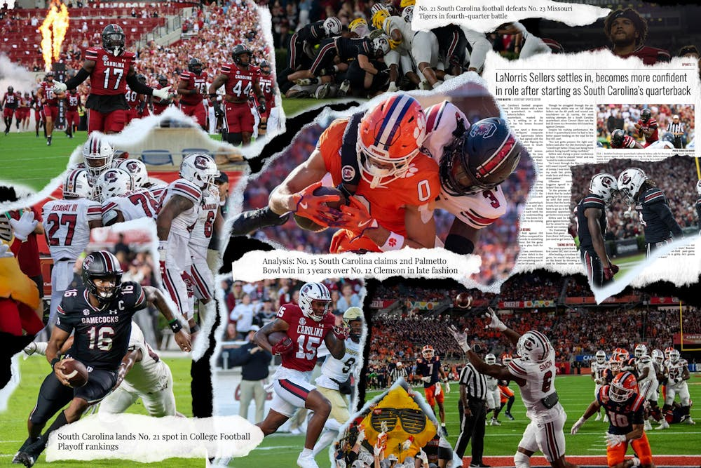
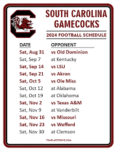

I love watching Gamecock Football. The energy and atmosphere at William's Brice Stadium is electric at every game. Watching them hold their own against some of the best teams in the SEC just proves that Carolina football is on the rise. I believe that LaNorris Sellers has the potential to be the greatest quarterback of all time. He is an early Heisman favorite because of his athleticism and smart plays.
Last season we outpreformed everyone's expectations. The Gamecocks ended the 2024 season 9-4 with an unfortunate ending at the Citrus Bowl. The season's success along with Beamer's reputation brought in plenty of 5-star recruits. I am already counting down to next season because if this year was any sign, the Gamecocks are just getting started.
 | Date | Opponent | Result |
|---|---|---|
| 09/07/2024 | Old Dominion | W 35-10 |
| 09/14/2024 | Kentucky | W 28-21 |
| 09/21/2024 | LSU | L 17-24 |
| 09/28/2024 | Akron | W 42-14 |
| 10/12/2024 | Ole Miss | W 31-28 |
| 10/19/2024 | Alabama | L 21-35 |
| 10/26/2024 | Oklahoma | L 24-27 |
| 11/09/2024 | Texas A&M | W 38-24 |
| 11/16/2024 | Vanderbilt | W 28-10 |
| 11/23/2024 | Missouri | W 24-17 |
| 11/30/2024 | Wofford | W 45-7 |
| 12/07/2024 | Clemson | W 31-28 |
| 01/01/2025 | Citrus Bowl vs Illinois | W 27-21 |